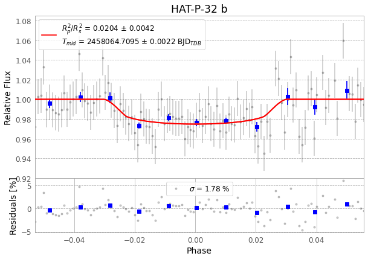
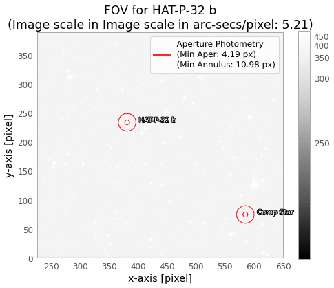
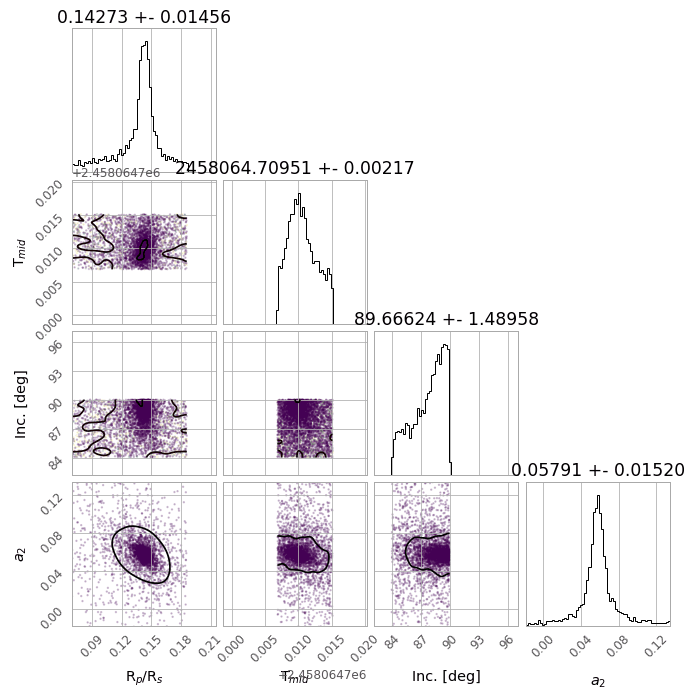
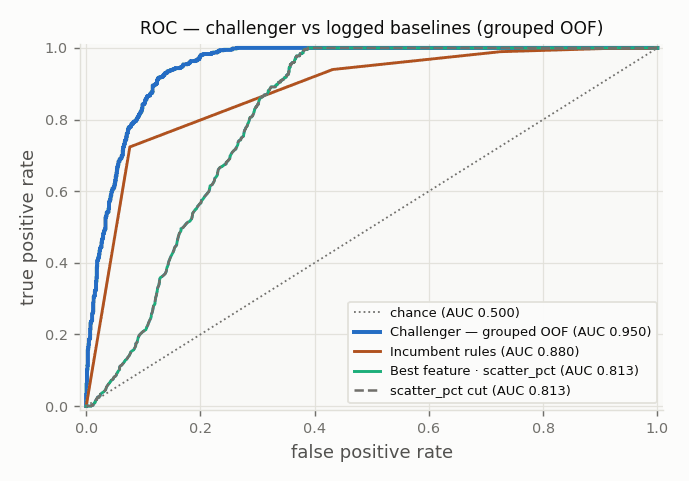
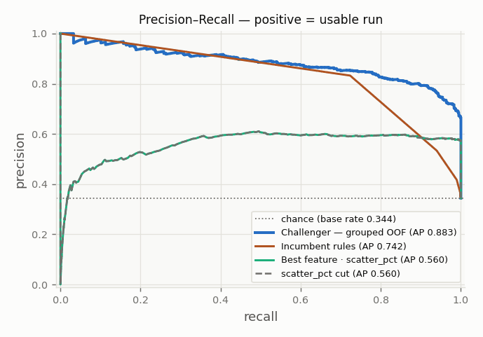
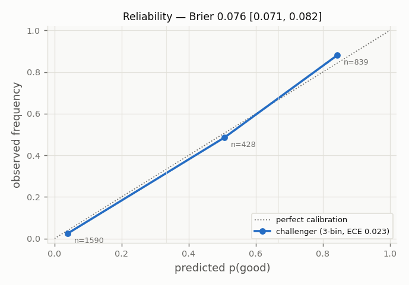
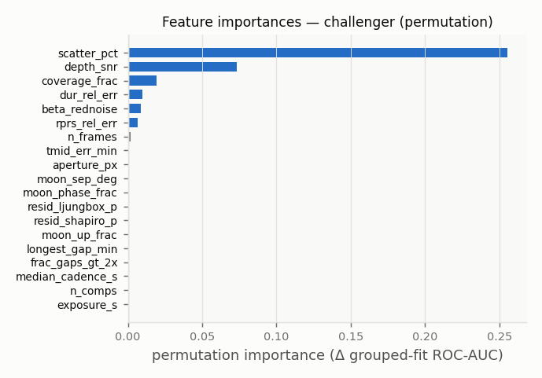

Design the trust layer between observation and contribution.
The bet: deterministic processing can be automated, while scientific decisions remain explicit, evidenced, and reversible.
Real observation sequenceHAT-P-32 b · 6 Nov 2017
I designed a human-in-the-loop product that turns telescope frames into traceable scientific evidence, without letting automation impersonate judgment.
Real captureM63 · Sunflower Galaxy
01 · Problem and users
A smart telescope can collect thousands of frames. The difficult part begins afterward: deciding what is trustworthy, explaining why, and preserving a review trail.
The bet: deterministic processing can be automated, while scientific decisions remain explicit, evidenced, and reversible.
Needs a practical plan, a reliable reduction, and a clear answer to “what needs my attention?”
Needs the curve, field, uncertainty, residuals, provenance, and caveats, not a confidence badge.
Needs visible pipeline health, reproducible runs, and failures that stop safely.
Observation sequenceHAT-P-32 b · field drift
02 · PM decisions
I treated trust, legibility, and human control as product requirements with measurable consequences.
Every workflow terminates in a reviewable dossier. Nothing ages into approval, and no model can write the final scientific status.
The curve, field, posterior, residuals, provenance, and caveats travel together instead of collapsing into a single score.
The quality model prioritizes review work. Discrimination and calibration are evaluated, but the model remains a scout, not a referee.
Real captureM106 · NGC 4258
03 · Product model
Repeatable work stays automated and testable. Judgment-shaped work becomes a review surface instead of an invisible decision.
Weather, moon, campaign value, and target visibility.
Operate the telescope and preserve source frames.
Sync, organize, validate, and assign stable run IDs.
Tracking, photometry, fitting, uncertainty, diagnostics.
Inspect the complete evidence bundle and decide.
Package only artifacts with explicit approval.
Track quality, drift, overrides, and pipeline health.
Measured positionsHD 189733 b · 72 tracked exposures
04 · Beginner explainer
This silent 39-second film uses the real observation frames, measured star positions, accepted light measurements, and fitted transit result.
Capture → compare → plot → interpret
Real data · captions built in · sound not required
The telescope repeats 9-second exposures. Small mount movement shifts the whole field across the sensor; that is normal.
Tracked target and reference positions move with every exposure. Their brightness ratio removes much of the change shared by cloud or transparency.
Time runs left to right. Relative brightness runs up and down. The 65 accepted measurements form a light curve.
The fitted depth is 2.41% ± 0.48%, about two blocked parts of every hundred, while uncertainty keeps the claim honest.
Personal telescopeM63 · 9 Jul 2026
05 · Capture platform
This telescope already captures my personal observations. Next, I plan to automate it as a field instrument that feeds new data into the pipeline. Historical exoplanet datasets elsewhere in this case study come from separate observatories and are labeled accordingly.
First light from my telescope
Two owner-supplied galaxy captures. Stack details come from the image filenames; distance and object type are NASA reference metadata.
Real datasetPreserved FITS sequence
06 · Dataset specification
A dated operational snapshot of source frames, reductions, exports, diagnostics, models, and reports.
Real reductionTarget + reference tracking
07 · Scientific artifacts
The portfolio keeps the scientific outputs literal: real plots, complete captions, and direct links to the underlying review package.



Real capture backdropM106 · 10 Jul 2026
08 · Model evaluation
The frozen v2 protocol asks whether the model can rank reductions from an unseen target. It is useful, calibrated, and not ready to replace the rules.
The model helps order the review queue. It never approves a dossier. On the stricter target-held-out test, it trails both the incumbent rules and the best single feature.
This is a deliberately hard comparison. The rules can use duration deviation, while v2 excludes that field and three other label-defining fields from the learned model.
Earlier v1 cycles used a different split and calibration method. They remain in the audit trail, but they are not trendlined against v2.
Ask one product question. Is this reduction usable for submission? Human-approved, accurate, and marginal runs are positive examples.
Keep each target together. Sixteen targets are split as groups, so a target seen in training cannot reappear in its test fold.
Log every baseline. The challenger must be compared with chance, a scatter cut, the best single feature, and the incumbent rules.
Check confidence, not only rank. ECE is .065 across three bins. Brier score is .107 with a 95% interval from .080 to .137.
A model may sharpen the recommendation line, but promotion is always a human decision.
Enough positive examples30 usable runs, above the minimum of 25.
Calibration thresholdECE .065, below the .100 trust gate.
Stability over timeOne v2 cycle is logged. Three consecutive stable cycles are required.
Beat the championGrouped AUC .872 remains below the rules at .927.
AUC asks whether usable runs rank above unusable ones. Precision and recall show the cost of finding them. Reliability asks whether a stated probability matches what happened.




Personal telescopeM63 · 9 Jul 2026
09 · Roadmap and reflection
The next work increases label quality, validates the personal capture platform, and measures how much review effort the product saves.
Increase positive-label diversity, normalize target names, and keep registry and report counts coherent across surfaces.
Benchmark pixel scale, timing, FITS behavior, tracking, and filter modes before changing reduction or quality assumptions.
Track time-to-decision, artifact opens, model overrides, and dossier rejection reasons, the metrics closest to scientific throughput.
What I learned
Trust is not a label on the output. It is the path a reviewer can retrace.
The working product, review queue, and scientific dossiers remain attached to this case study.
{kind=link}
{kind=link}
{kind=link}
{kind=link}
{kind=link}
{kind=link}
{kind=link}